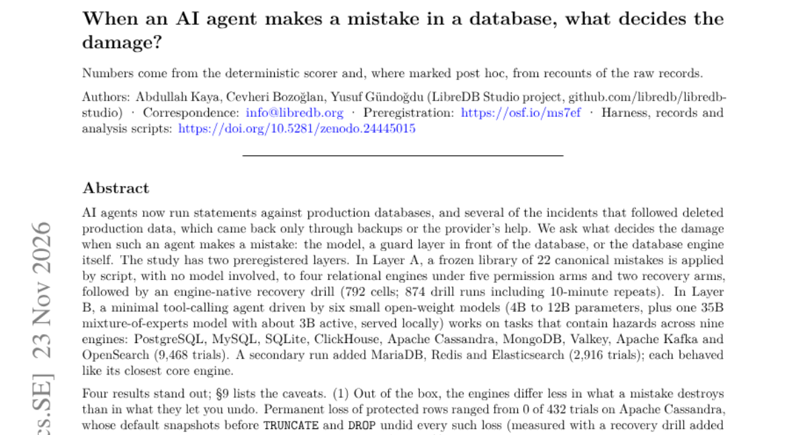
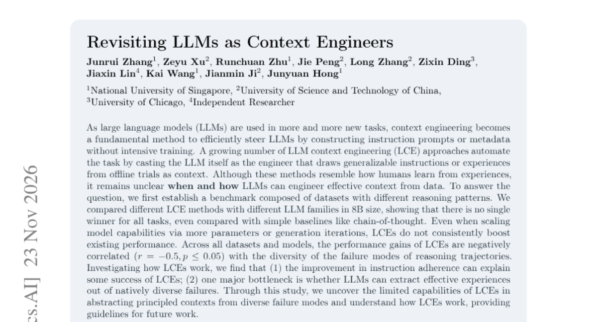

蚂蚁灵波发布LingBot-Map 2.0，可自行修正空间记忆
灵波推出 LingBot-Map 2.0，宣称模型能自我修正“空间记忆”以提升建图精度；同批报道还提到 LingBot-Navi 与双产品线升级。目前无摘要说明评测方式与精度提升幅度，效果仍待验证。
灵波推出 LingBot-Map 2.0，宣称模型能自我修正“空间记忆”以提升建图精度；同批报道还提到 LingBot-Navi 与双产品线升级。目前无摘要说明评测方式与精度提升幅度，效果仍待验证。
新智元报道的主题是「Anthropic破发！史上最大IPO，4个交易日跌穿83美元」。
新智元报道的主题是「GPT-6 Astra冲刺大一统理论，比黎曼猜想更震撼！奥特曼力转」。
新智元报道的主题是「Gemini 4 Carbon点亮8颗太阳！70年几何悬案告破，只用6页神级证明」。
新智元报道的主题是「1.9万Star中国开源神作2.0来了！灵波发布「空间记忆」双王炸」。
新智元关注的问题是「66款模型大横评！物理AI竟有这么多认知盲区」。
新智元报道的主题是「教会Claude Code「先问再干」的人，也跳槽OpenAI了！」。
机器之心报道的主题是「Sharpa与上海交通大学联合提出WiTac，让灵巧手借腕部视角读懂指尖触觉」。
今日材料呈现两条相互缠绕的线索：一是蚂蚁灵波发布 LingBot-Map 2.0 等空间智能产品，被多家媒体以“空间记忆”与开源成绩为卖点报道[1][5][9]；二是多篇标题以夸张措辞宣称 AI 在数学、IPO 市场取得突破，但均缺摘要与细节，需谨慎对待[2][3][4]。 阅读建议：对灵波事件可交叉比对三篇报道确认发布范围与模型改动[1][5][9]；对“证明几何悬案”“大一统理论”“破发”等强结论，目前仅有标题，无法核实方法、数字或结果，宜视作待验证主张[2][3][4]。物理 AI 横评与机器人、人才流动类报道同属标题级信息，需查原文[6][7][8]。

推荐理由 该研究通过预注册实验（792个单元格、9468次试验）系统比较模型、防护层与数据库引擎本身对损害的控制作用，值得核对H2至H5的决策规则以及事后分析中预注册结局与原始行损失不一致的具体结果。
DeepSeek 中文选读卡
智能体按工具返回结果决定下一步；本文追问：智能体在数据库里犯错时，损害由模型、前置防护层还是数据库引擎决定。研究分两层：A层用脚本把22类固定错误施加到四个关系引擎的五种权限与两种恢复条件下，做引擎原生恢复演练；B层让六个小型开源模型驱动工具调用智能体，在九个引擎的危险任务上运行，另有三个引擎的次轮试验。作者报告：开箱时引擎差别更多在可撤销程度而非破坏程度；七条预注册假设中三条达标（H2仅一类损害、H3多由实验条件构造、H4仅原指标），四条未达标，H5因智能体未找到凭据而无信息；事后分析S1-S13为探索性、未校正多重比较，且四个引擎上预注册结果与原行损失对G1判断不一致。适用上，A层无模型参与，B层限于小型本地模型与所列引擎，不能外推到其他模型或部署；社区新闻只当线索。精读需核查：H3“多由构造”具体指哪些条件，以及G1不一致如何判定。
语言模型智能体在多步任务中根据观察决定下一步行动，调用工具后再读取结果。理解这条循环，有助于区分计划出错、工具调用出错和反馈不足。
语言模型智能体在多步任务中根据观察决定下一步行动，调用工具后再读取结果。理解这条循环，有助于区分计划出错、工具调用出错和反馈不足。
有公开出处的英文主题讲解，可先补概念，再回到当前条目。
题名同样涉及 mixture of experts，登记发表时间为 2025-06-01。
题名同样涉及 mixture of experts，登记发表时间为 2025。该记录为预发布稿。

推荐理由 该研究构建跨推理模式基准，发现不同LCE方法在8B模型上并无一致优胜者，且性能增益与失败模式多样性相关（r=-0.5），值得精读其如何量化“从多样失败中提取有效经验”这一瓶颈。
DeepSeek 中文选读卡
上下文工程指不重训模型，只靠改写提示或元数据来引导大模型。本文追问：大模型何时、如何能从离线试错中提炼出有效上下文。作者先搭了一个包含不同推理模式数据集的基准，在8B规模上比较多种方法与大模型家族，发现没有一种方法在所有任务上领先，连思维链这样的简单基线也可能不输；加大参数量或多轮生成也未带来稳定提升。报告称，性能增益与失败模式多样性负相关（r=-0.5），指令遵循改善能解释部分成功，主要瓶颈在于能否从多样失败中提炼有效经验。研究限于8B规模与所选数据集，缺少更大模型和其他任务的对照验证。精读时值得核查：该相关系数的样本量、显著性检验方式，以及是否在多数据集上做了多重比较校正。
先从原文明确列出的资料读起。可用相同的研究问题对照其任务、方法和评测条件，再回到当前条目。
作者在参考文献 Wang et al. (2025) 中列出了这项工作。它与本文共同讨论llms，可对照两篇所用任务和评测条件。
作者在参考文献 Leviathan et al. (2025) 中列出了这项工作。它与本文共同讨论llms，可对照两篇所用任务和评测条件。
作者在参考文献 Cai et al. (2025b) 中列出了这项工作。它与本文共同讨论via，可对照两篇所用任务和评测条件。

推荐理由 CARE-3D用GRPO优化3D场景中的证据获取策略，并通过反事实归因与组覆盖采样改进中间工具选择的信用分配，值得核对MSQA和Beacon3D上相对SFT与仅用答案和格式奖励的GRPO的增益及消融证据。
DeepSeek 中文选读卡
CARE-3D提出一种面向具身3D场景的强化后训练框架：先用SFT建立有效交互，再用GRPO优化智能体并冻结3D定位模块，结合返回证据的反事实归因和分组覆盖采样。作者报告在MSQA和Beacon3D上相比仅用答案与格式奖励的SFT和GRPO有一致提升，尤其体现在空间推理和定位答案一致性上；但未给出具体数值、基线强弱或独立复现。适用范围限于其评测场景和工具集，社区新闻中的线索不能当作证据。精读时值得核查：反事实归因是否真比单纯结果奖励带来可归因的增益，以及分组覆盖采样是否引入额外计算成本。